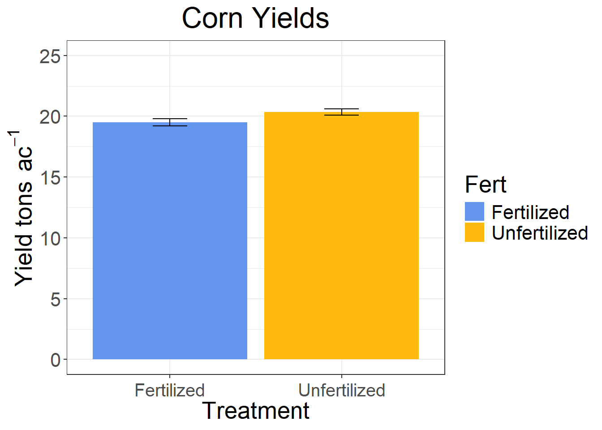

dat <- rnorm(100, mean = 20, sd = 2)
dat <- data.frame(dat)
dat$Fert <- sample(c("Fertilized", "Unfertilized"))
colnames(dat) <- c("Yield", "Fert")
dat## Yield Fert
## 1 23.60105 Fertilized
## 2 18.89708 Unfertilized
## 3 20.21412 Fertilized
## 4 21.57825 Unfertilized
## 5 19.51149 Fertilized
## 6 20.76836 Unfertilized
## 7 17.66153 Fertilized
## 8 23.03654 Unfertilized
## 9 20.14596 Fertilized
## 10 18.94465 Unfertilized
## 11 18.95095 Fertilized
## 12 21.49380 Unfertilized
## 13 17.63517 Fertilized
## 14 17.29058 Unfertilized
## 15 19.57543 Fertilized
## 16 19.82104 Unfertilized
## 17 20.51407 Fertilized
## 18 22.40857 Unfertilized
## 19 19.65194 Fertilized
## 20 21.38043 Unfertilized
## 21 20.82677 Fertilized
## 22 17.13904 Unfertilized
## 23 17.40066 Fertilized
## 24 22.80670 Unfertilized
## 25 19.56130 Fertilized
## 26 24.26498 Unfertilized
## 27 16.33306 Fertilized
## 28 19.77898 Unfertilized
## 29 21.53142 Fertilized
## 30 20.64701 Unfertilized
## 31 18.52924 Fertilized
## 32 22.29143 Unfertilized
## 33 19.44353 Fertilized
## 34 22.11368 Unfertilized
## 35 20.73503 Fertilized
## 36 21.69503 Unfertilized
## 37 17.47436 Fertilized
## 38 21.05647 Unfertilized
## 39 22.17881 Fertilized
## 40 18.60104 Unfertilized
## 41 22.84205 Fertilized
## 42 22.87804 Unfertilized
## 43 17.40938 Fertilized
## 44 18.20588 Unfertilized
## 45 16.23045 Fertilized
## 46 20.05500 Unfertilized
## 47 18.18517 Fertilized
## 48 16.70488 Unfertilized
## 49 20.50468 Fertilized
## 50 21.28463 Unfertilized
## 51 19.30613 Fertilized
## 52 18.96947 Unfertilized
## 53 20.79634 Fertilized
## 54 21.90711 Unfertilized
## 55 20.52036 Fertilized
## 56 15.89973 Unfertilized
## 57 20.57594 Fertilized
## 58 20.72389 Unfertilized
## 59 16.62652 Fertilized
## 60 22.49434 Unfertilized
## 61 16.45961 Fertilized
## 62 20.44567 Unfertilized
## 63 18.87896 Fertilized
## 64 18.98374 Unfertilized
## 65 18.12233 Fertilized
## 66 23.27130 Unfertilized
## 67 18.69437 Fertilized
## 68 21.67843 Unfertilized
## 69 18.77681 Fertilized
## 70 19.25657 Unfertilized
## 71 18.96953 Fertilized
## 72 19.31646 Unfertilized
## 73 21.36784 Fertilized
## 74 21.59668 Unfertilized
## 75 18.40039 Fertilized
## 76 20.45926 Unfertilized
## 77 23.38710 Fertilized
## 78 18.46306 Unfertilized
## 79 16.91369 Fertilized
## 80 17.35880 Unfertilized
## 81 18.64836 Fertilized
## 82 19.26599 Unfertilized
## 83 18.97226 Fertilized
## 84 18.08149 Unfertilized
## 85 19.75667 Fertilized
## 86 21.33187 Unfertilized
## 87 22.47744 Fertilized
## 88 22.36788 Unfertilized
## 89 22.99672 Fertilized
## 90 19.42179 Unfertilized
## 91 23.84737 Fertilized
## 92 21.03702 Unfertilized
## 93 20.95318 Fertilized
## 94 20.60521 Unfertilized
## 95 21.64247 Fertilized
## 96 20.78516 Unfertilized
## 97 17.11910 Fertilized
## 98 18.26221 Unfertilized
## 99 14.02709 Fertilized
## 100 19.89891 Unfertilizedmod <- lm(Yield ~ Fert, data = dat)
anova(mod)## Analysis of Variance Table
##
## Response: Yield
## Df Sum Sq Mean Sq F value Pr(>F)
## Fert 1 17.76 17.7578 4.3754 0.03905 *
## Residuals 98 397.74 4.0585
## ---
## Signif. codes: 0 '***' 0.001 '**' 0.01 '*' 0.05 '.' 0.1 ' ' 1library(ggplot2)## Warning: package 'ggplot2' was built under R version 4.4.2library(Rmisc)## Warning: package 'Rmisc' was built under R version 4.4.2## Loading required package: lattice## Loading required package: plyr## Warning: package 'plyr' was built under R version 4.4.2library(multcompView)## Warning: package 'multcompView' was built under R version 4.4.2dat_sum <- summarySE(dat, measurevar = "Yield", groupvars = "Fert", na.rm = TRUE)
dat_plot <- ggplot(dat_sum, aes(y = Yield, x = Fert, fill = Fert)) +
geom_bar(position = "dodge", stat="identity") +
geom_errorbar(aes(ymin = Yield-se, ymax = Yield+se), width = .2, position = position_dodge(.9)) +
scale_fill_manual(values=c("cornflowerblue", "darkgoldenrod1"))+
scale_y_continuous(limits=c(0,25)) +
theme_bw()+
theme(text = element_text(size = 20)) +
theme(legend.position = "right", strip.background = element_rect(colour="black", fill="white")) +
theme(axis.text.x = element_text(vjust = 0.5, hjust=.5, size = 15)) +
labs(x="Treatment", y="Yield tons " ~ac^-1) +
labs(title="Corn Yields") +
theme(plot.title = element_text(hjust = 0.5))
dat_plot
results <- data.frame(sample_size = integer(),
treatment = character(),
p_value = numeric())
treatments = c("Fertilized", "Unfertilized")
for (i in seq(10, 200, by = 5)) { # Increase sample size by 5
temp_dat <- dat[sample(1:nrow(dat), i, replace = TRUE), ]
mod <- lm(Yield ~ Fert, data = temp_dat)
p_value <- summary(mod)$coefficients[2]
results <- rbind(results, data.frame(sample_size = i, treatment = treatments,
p_value = p_value))
}